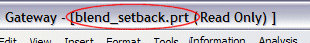
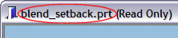
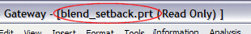
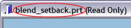

我如何知道我的图形窗口是否已被最大化显示？

我如何知道我的图形窗口是最大化显示还是从主窗口中分离？
当初次使用 NX 时，默认的图形窗口将是处以最大化状态的。如果图形窗口被最大化，则当前部件的文件名将出现与 NX 窗口的标题栏中。

如果图形窗口是分离的(未最大化)，则部件文件名将出现与分离窗口的标题栏中。

如果图形窗口最大化显示，向下还原按钮将会出现在右上角。

我如何知道我的图形窗口是最大化显示还是从主窗口中分离？
当初次使用 NX 时，默认的图形窗口将是处以最大化状态的。如果图形窗口被最大化，则当前部件的文件名将出现与 NX 窗口的标题栏中。

如果图形窗口是分离的(未最大化)，则部件文件名将出现与分离窗口的标题栏中。

如果图形窗口最大化显示，向下还原按钮将会出现在右上角。